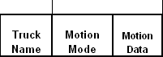
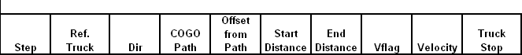

Live Load Envelope Definition
(These optional entries are not operational yet!)
Description
One step in the creation of the final load envelope that is used to rate a bridge, is the creation of load envelopes of each truck along each path that it is used. These envelopes will then be used to create composite envelopes for multiple truck and multiple lane configurations. The longitudinal motion for each truck along each path is defined with this table. Typically, only the first three fields need data, the remaining fields are for the special truck sequencing method of motion control that is not required for bridge rating.
The truck sequencing option provides an alternate method for control of motion for moving live loads. This optional entry allows you to control the motion of one or more trucks in any number of steps. You use this command in conjunction with existing <A href=”Truck_Definition.html”>Truck Definitions</A> to precisely control the range of motion and axle loading configurations during the development of the force, reaction, and displacement envelopes. You specify a new “truck” name to represent the final composite envelope that is generated.
Where as an envelope is developed for each truck for each path that it is used on, a truck this is created using the SEQ method is assumed to apply to all referenced paths. Thus, if a sequenced “Truck” is referenced in another table, it will only have one envelope that is used for every specified path. This is different the other modes that generate an envelope for each used path.
A Truck Sequencing entry defines a new truck that is a combination of one or more trucks that have specific ranges of motion, relative velocity, and sequence of events. The system will use this information to compute a single composite live load envelope that can be referenced through out the program the same as a normal truck entry is used.
Note. Only Live Load Definitions and axle load entries in the Truck Definition are used with this option. Lane loading is not active for truck sequencing.
Parameters
Truck Name
Enter the name of a truck referenced in the Live Load Definition or Truck Definition tables. If the Motion Mode is SEQ then specify a new truck name.
Motion Mode
The longitudinal motion of the truck along a path is controlled by this parameter. Use one of the following codes:
AUTO The truck will be moved such that every axle and the truck’s center of action will be positioned directly over the location of the intersection of the truck’s current path and each cross beam or floor beam. Also, each axle will be placed at a number of evenly spaced locations between the cross beam / floor beam intersection points. The number of these intermediate points is specified by an integer value in the Motion Data field. The truck will be run in both directions along the path.
FIXED Specify a constant distance in Feet in the Motion Data field. For each iteration, the truck will be moved this distance along the path. The truck will be run in both directions along the path.
SEQ This method allows for multiple trucks to be moved along paths on the bridge in a very controlled and complex sequence of motion.
Motion Data
If the motion mode is either AUTO or FIXED then this field is used as described above. For the SEQ mode, this field is ignored.
The following entries are needed only if the motion mode is SEQ.
Step
Each truck sequence can have more then one configuration. For example, a truck sequence could describe step 1 as having truck 1 start at location 100 and proceed to location 200 then stop. The next step, step 2, could then specify that truck 2 start at location 100 and that truck 1 continue from where it left off and both trucks run until they are both off of the end of the bridge. The end of a step is defined as when no trucks are in motion.
Ref Truck
Reference a existing “Truck” as defined the Truck Definition and Live Load Definition entries. Use multiple entries with the same Truck Name and Step to define more then one referenced truck in motion at one time.
Dir
Use the code L for left to right axle orientation, and R for right to left. The assumed coordinate system is that left to right is going up station and visa versa for right to left. For example, if the L code is used, the first axle is placed at the start location, and the remaining axles are located to the left of that point. Also, a truck given a code of L and then having a start position to the right of the ending position will infect describe a truck going backwards.
COGO Path
Specify the path that the referenced truck is to follow. Use the next entry to create a path parallel to an existing COGO path.
Offset from Path
Specify an offset distance from the specified COGO Path to use a path that is parallel to an existing COGO path. Looking up station, a positive direction is to the right.
Start Distance
Distance from start of COGO path for initial location of truck’s front axle..
End Distance
Distance from start of COGO path that will be the farthest the front axle of the truck can move. Once the front axle of a truck reaches the End Distance it is stopped. When all trucks in the current step have stopped then that step is complete.
VFlag
The Velocity flag is used to determine how fast the truck should move. Velocity has the units of feet per iteration. Four codes are allowed here:
Space: Use the value of SeqVel in the Analysis Controls entries to set the speed.
P: The velocity will be computer as proportional to the initial range of motions between this entry and the first entry of the step. If P is used in the first entry of the step the value of SeqVel is used. The computed speed is then multiplied by the factor Velocity which defaults to 1.0.
V1 = Velocity for truck in first entry in step.
D1 = Range of motion of first entry in step.
D2 = Range of motion of this entry.
Speed = V1 * (D1 / D2) * Velocity
R: The velocity of the truck referenced in this entry will be relative to the first entry in this step.
V1 = Velocity for truck in first entry in step.
Speed = V1 * Velocity
A: Use this code to enter an absolute velocity that is not derived from any other information.
Speed = Velocity
Velocity
The relative / absolute velocity factor as describe above.
TruckStop
There are two ways to have a truck stop during a step. One is when the first axle reaches the end position. The other is to use this field to tie the motion of this entry to another entry in the same step. Reference another Truck that is used in this step. When that truck stops, this one will stop also. This option is not valid for the first truck specified in a step.